Multilingual models promise zero-shot transfer from high- to low-resource languages. In practice, Doddapaneni et al. (ACL 2023) identify three reasons this breaks down for the 22 languages of the Indian constitution:
Of the 22 scheduled languages, only 15 are supported by XLM-R — languages like Bodo, Dogri, and Kashmiri are simply missing from corpora like CC-100 and mC4.
Where pretraining data does exist for a low-resource language, it is far smaller than for English — the language gets a poor share of model capacity and vocabulary.
In XTREME-R, only 3 of 10 tasks cover more than two Indic languages, and no task covers more than seven. 15 of the 22 constitutional languages appear in no task at all.
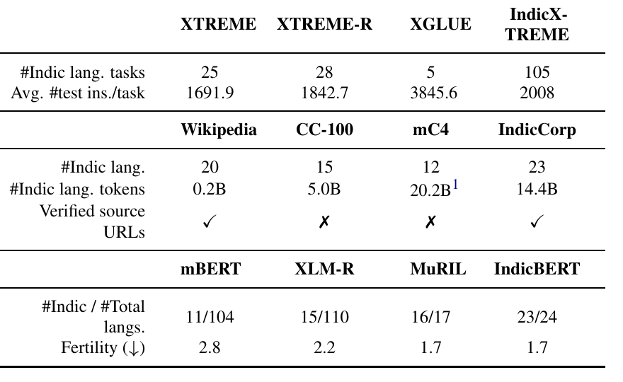
Every column tells the same story: existing multilingual resources touch Indic languages only incidentally. IndicCorp is the only pretraining corpus built exclusively from human-verified source URLs; IndicXTREME has by far the most evaluation sets (105) of any benchmark; and IndicBERT is the only model supporting nearly all (23/24) of the target languages.
The paper targets the 22 languages of the 8th schedule of the Indian constitution, spanning 4 language families and spoken by over a billion people (8 among the top-20 most-spoken languages globally). It contributes along three axes:
20.9B-token monolingual pretraining corpus, 24 languages, 4 families — this lecture's focus for dataset preparation.
9-task, 20-language, human-supervised evaluation benchmark — this lecture's focus for annotation & benchmarking.
278M-parameter BERT pretrained on IndicCorp v2, evaluated on IndicXTREME — the model used to demonstrate the benchmark works.
Every language in IndicCorp is tagged with its class from Joshi et al.'s (2020) inclusion taxonomy — 5 is a resource-rich "Winner," 1 is an almost entirely unresourced "Left-Behind." Of the languages newly added to IndicXTREME, nine are class-1 Left-Behinds; only three are class-5 Winners.
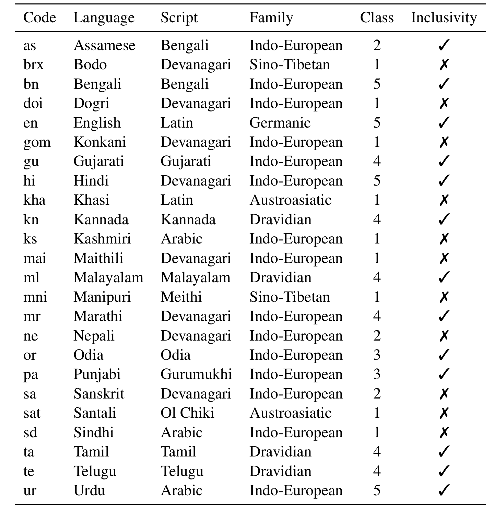
9 tasks across 4 categories — 5 classification, 2 structure prediction, 1 QA, 1 retrieval. Since the benchmark evaluates zero-shot transfer, only test (and where possible, in-language dev) sets are built — models are always trained on English.
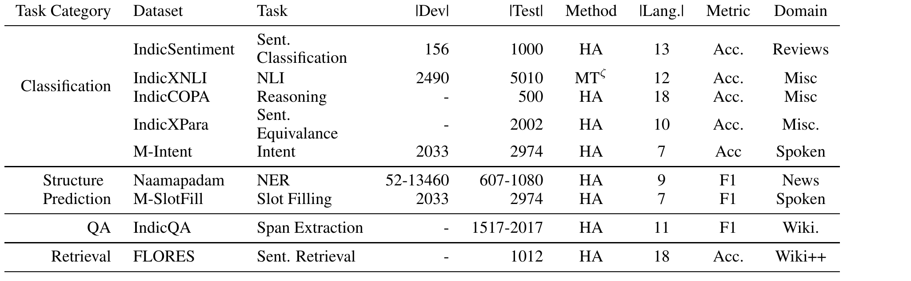
HA = human annotated, MT = machine translated. Of 105 total evaluation sets summed across languages and tasks, 52 are brand-new contributions.
The corpus prioritizes clean, diverse text, so news articles are chosen as the primary source — a deliberate departure from generic CommonCrawl dumps like CC-100 and mC4.
Beyond the sources already known from IndicCorp v1, new ones are found via news repositories and automatic web search: the most frequent words in a language are used as search queries, and the language of the retrieved pages is inspected to identify candidate source URLs.
This process is noisy — some retrieved URLs turn out to host offensive or machine-generated content, which motivates the next step.
Before any crawling happens, every candidate source is checked by a person — this is the step that distinguishes IndicCorp from CC-100 and mC4 in Table 1's "Verified source URLs" row.
Each annotator visits a candidate URL and confirms it is a genuine website containing
clean data in the language of interest. Across languages, 1–33% of URLs are
discarded as noisy. Only the shortlisted, verified URLs are handed to the
open-source webcorpus toolkit for crawling.
Notice this quality gate exists even for the pretraining corpus — human supervision in this work is not limited to the evaluation benchmark.
Three automatic filters clean the crawled text before it enters the corpus:
Paragraph-level filtering with cld3 and langdetect in parallel (cld3 misses Assamese & Oriya). Bodo and Dogri aren't supported by either tool, so LID filtering is skipped for them.
Crawled sentences often mix in transliterations or English phrases. A sentence is dropped if the fraction of characters in its native script is below 0.75.
Punctuation is stripped from each sentence; if what remains is shorter than 10 words, the document is discarded entirely.
Web-crawled Indic text is known to contain offensive material (Kreutzer et al., 2022a). Two blacklists are merged to catch it:
In-house annotators curate offensive words and phrases for 17 languages — about 90 words/phrases per language, including borderline terms flagged by native speakers as offensive only in certain contexts.
A parallel, independently released list covering 209 languages (Costa-jussà et al., 2022) is merged in, widening coverage beyond the 17 in-house languages.
A sentence is removed if it contains a blacklisted word, or (for phrases) if the whole phrase appears verbatim. This single filter shrinks the corpus from 23.1B to 20.9B tokens — a 9.5% reduction, confirmed by direct computation from the paper's own figures.
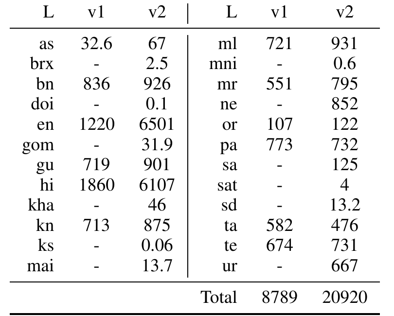
The de-duplicated v2 corpus totals 20.9B tokens across 24 languages — 2.38× the size of v1's 12-language, 8.79B-token corpus (paper rounds to "2.3×"), with Hindi alone growing 3.28× ("3.3×" in the paper).
Many languages — Bodo, Dogri, Konkani, Kashmiri, Maithili, Manipuri, Sanskrit, Santali, Sindhi, Urdu — simply didn't exist in v1 at all (shown as "-").
The bottom 11 lowest-resource languages together still contribute only 1.08B tokens — a fraction of Hindi alone.
COPA (Choice of Plausible Alternatives) tests causal commonsense reasoning: given a premise, pick which of two alternatives is the more plausible cause or effect.
The English COPA test set is manually translated into 18 Indic languages. Before translation, the premise and its two choices are randomized and reassigned across translators — so no single translator sees a whole item and could unconsciously preserve tells (like sentence length) that leak the answer. The three pieces are re-grouped into complete items only after translation.
Fine-tuning uses the English Social IQA dataset, since COPA itself has no training split.
IndicQA is a cloze-style reading-comprehension dataset built from scratch, with no English-source translation involved anywhere in its creation.
The result: 11 languages, contexts drawn from real encyclopedic text about Indic culture — not machine-translated from an English original.
Annotators asked to write a question directly from a passage tend to copy a sentence and prepend a "wh" word — producing questions that are trivial lexical matches. IndicQA's two-phase process breaks this shortcut:
Split each context into a larger first part and a smaller second part (2–3 sentences). Machine-translate both parts to English. An annotator writes Indic-language questions from the English translation — they cannot copy a sentence they never saw in Indic.
A different annotator sees only the original Indic first part and marks answer spans for the questions. Questions drawn from the withheld second part become naturally unanswerable — this is exactly where the NA labels come from.
2–3 annotators per language; all annotation done on the Haystack tool.
Rules this specific are what keep 11 independently-annotated languages comparable.
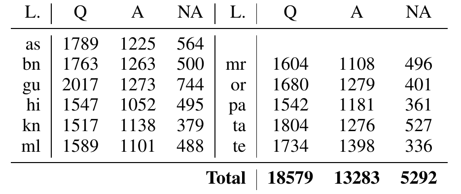
Across 11 languages: 18,579 questions, of which 13,283 (71%) are answerable and 5,292 (28%) are unanswerable — the direct product of the Phase 1 / Phase 2 split on the previous slides.
1001 English sentences (≥10 words) are machine-translated into 10 languages with IndicTrans; annotators verify/correct each translation, then write one paraphrase and one non-paraphrase per sentence — a 1001-way parallel triplet in every language.
Minimize word overlap; swap active/passive voice; use synonyms liberally; use temporal phrase swapping, e.g. "he fell and got hurt" → "he got hurt when he fell."
Swap named entities, pronouns, adjectives, adverbs, e.g. "John drove Jane to the market" → "Jane drove John to the market." Negation/antonyms restricted unless necessary.
Unlike PAWS-X, no back-translation or noisy alignment is used to manufacture non-paraphrases. 2 annotators per language; the task is run on Google Sheets.
Ordinary product reviews are one-dimensional and highly polarized, which makes sentiment classification artificially easy. IndicSentiment is designed to be harder and more nuanced.
2 annotators per language; done on Google Sheets; annotators are instructed to avoid offensive language.
Not every task in IndicXTREME is built from scratch — some adapt existing multilingual resources, still under human supervision:
Aggarwal et al.'s (2022) machine-translated XNLI. Source text is transcribed speech, so translations can be structurally odd — this work manually re-verifies and corrects parts of the test set (ongoing, see next slide).
English sentence NER-tagged by an off-the-shelf model → tags projected to the Indic sentence via word alignment → annotators verify and correct the projected tags (IOB2 format).
Already an n-way parallel, human-translated dataset (1012 sentences, 18 Indic languages) — incorporated directly for sentence-retrieval evaluation.
Amazon Alexa user queries, human-annotated for 51 languages; a 7-Indic-language subset is taken as-is for IndicXTREME.
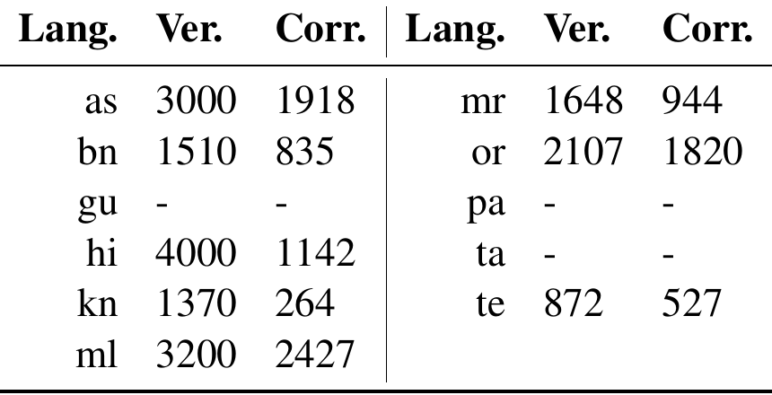
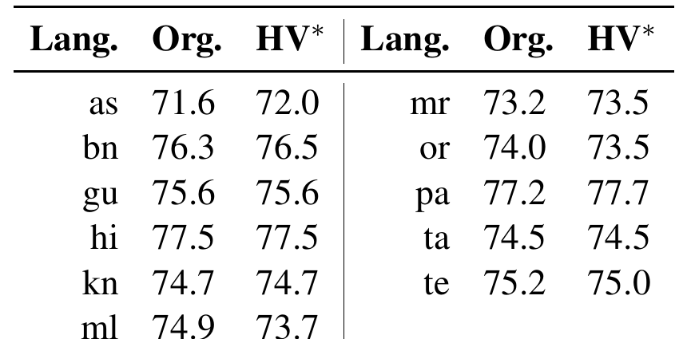
Of 5,010 test instances per language, only a subset has been manually re-verified so far (e.g. 4,000 of Hindi's, 1,142 corrected). Scores on the partially-verified set (HV*) are already close to the original (Org.) — average unchanged at 75.0 — but the authors are explicit that this is a live, six-month effort, not a finished dataset.
Whichever of the four creation paths a task followed — translated from scratch, built with no English source at all, machine-translated then verified, or tag-projected then corrected — every single evaluation set in IndicXTREME carries a human-supervision step:
"We reemphasise that ALL the evaluation sets included in IndicXTREME were created with human supervision. In other words, they were either translated or post-edited or created or verified by humans."
Three tasks — NER, QA, and paraphrase detection — were created entirely from scratch, with no translation from English sources at any stage.
IndicXTREME only ships test (and some dev) sets — never Indic-language training data. This forces every model into the same zero-shot recipe:
Unlike most prior work, which reuses one fixed hyperparameter setting across all tasks, this paper runs a task-specific grid search (learning rate, weight decay) for every model, for a fair comparison.
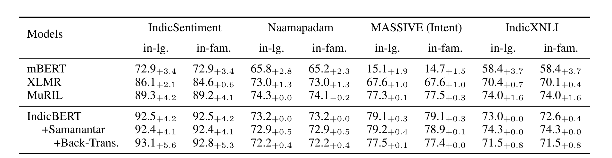
Every subscript is a gain over using an English dev set. Hindi and Tamil dev sets stand in for the whole Indo-European and Dravidian families respectively — and models selected with these in-family sets perform on par with those selected using true in-language sets, both clearly ahead of English-only selection.
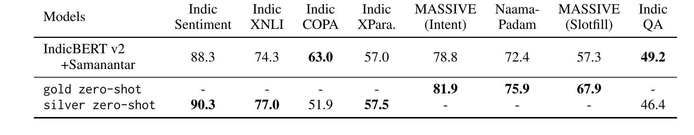
Swapping the transfer language from English to Hindi ("gold zero-shot," using Naamapadam and MASSIVE's real Hindi training data) lifts NER by +3.5, Intent by +3.1, and Slot-filling by +10.6 points. "Silver zero-shot" (machine-translating the English training set to Hindi) helps sentiment/XNLI/paraphrase similarly, but hurts IndicCOPA and IndicQA — both tasks are unusually sensitive to the small errors translation introduces.
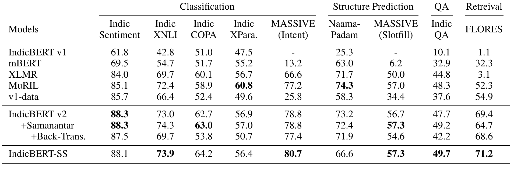
The IndicBERT v2 family beats every massively-multilingual baseline (mBERT, XLM-R, MuRIL) on 7 of 9 tasks. The pattern holds even for the ablation trained purely on IndicCorp v2 with MLM (no parallel data) — models that don't have to share capacity with unrelated high-resource languages simply do better on Indic tasks.
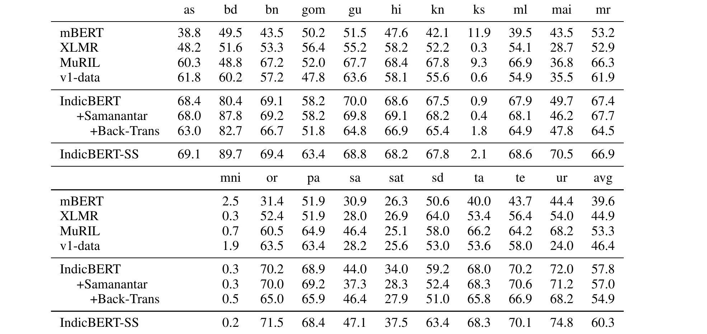
Extremely low-resource languages (below the 10th percentile of Table 3) show a sharp, consistent drop — e.g. on IndicCOPA, Santhali and Sindhi score 25.9% and 17.7% lower than Hindi respectively. The paper attributes this to lacking pretraining data plus two compounding effects: no shared script, and no linguistic "cousin" in the corpus to bridge transfer. And even this is optimistic — IndicXTREME can only evaluate 19 of IndicCorp's 24 languages; five "left-behind" languages have no evaluation set at all yet.
Paid a competitive monthly salary set by qualification, prior experience, and local government norms. All were native speakers of the language they worked on, from the Indian subcontinent, and were informed their annotations would be publicly released.
No personally identifying information in any annotated set. Both the annotated data and the crawled corpus were checked for offensive content and discarded where found.
Code and models are released under the MIT License; the datasets under CC-0.